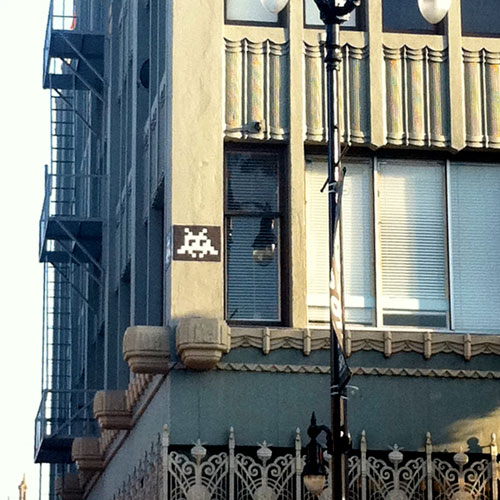

Space Invader

Invader (born 1969) is a French urban artist who pastes up characters from and inspired by the 1978 arcade game Space Invaders game, made up of small coloured square mosaic tiles that form a space invader character mural. He does this in cities across the world, then documents this as an "Invasion", with books and maps of where to find each invader.
Invader is responsible for perhaps the most recognizable street art stunt of the last decade. In a planet-wide war of attrition, the pixilated expansionist aliens from Space Invaders stalked the Earth once more, appearing everywhere from on the 'Hollywood' letters to Jacques Chirac's lapel.
Invader started this project in 1998 with the invasion of Paris – the city where he lives and the most invaded city to date – and then spread the invasion to 31 other cities in France (such as Montpellier,Marseille, Avignon, Rennes, Bordeaux, Lille, Chartres, or Bastia…). London, Cologne, Geneva, Newcastle, Rome, Beanchester, Darlington, Istanbul, Monaco are among the 22 other European cities which have been invaded. Throughout the world, São Paulo, Los Angeles, New York City, Miami, San Diego,Toronto, Bangkok, Tokyo, Katmandu, Varanasi, Melbourne, Perth and even Mombasa are now invaded with his colourful characters in mosaic tiles.
The mosaics depict characters from Space Invaders and other video games from the early 1980s. The images in these games were made with fairly low-resolution graphics, and are therefore suitable for reproduction as mosaics, with tiles representing the pixels. The tiles are difficult to damage and weather-resistant.
The mosaics are half built in advance. When Invader arrives in a city he obtains a map and spends at least a week to install them. They are catalogued, pictured and Invader uses a map indicating their locations within the city. Typically, mosaics are located 10 to fifteen feet above the ground, and often on street corners in areas of high visibility.